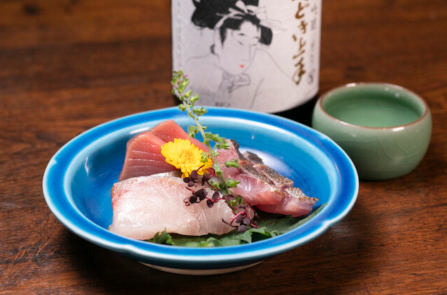

「ゆかり」では、食材が持つ本来の輝きと、そこから生まれる新たな調和を追求しています。日本屈指の漁場・豊後水道から空輸される活魚、大地が育む瑞々しい走りのお野菜、そして料理に寄り添う厳選された日本酒や国産ウイスキー。これらが織りなす極上の味わいと、静謐な時間をお届けいたします。

当店では、四季の移ろいを単に追いかけるのではなく、その少し前にある予感――「走り」の食材を大切にしています。お野菜は、これから満ちていく大地のエネルギーを最も蓄えた時期のものを厳選。一足早い季節の息吹をお届けします。
「ゆかり」の強みは、何よりも魚にあります。日本屈指の漁場である大分・豊後水道で水揚げされた新鮮な魚介を、空輸によってその日のうちに店へ。急流に揉まれ、身の引き締まった極上の活魚を、最高の状態でお造りや煮付けにしてご提供します。
全国から厳選した日本酒、そして希少な国産ウイスキーを豊富に取り揃えています。料理の繊慢な風味を引き立てる辛口の食中酒から、芳醇な余韻を楽しめる一杯まで。お客様の好みやその日の料理に合わせた最適なペアリングをご提案します。
豊後水道の鮮魚、走りのお野菜を活かした、その日限りの特別な一皿。
常時100種類以上のアラカルト写真の一部をご紹介します。
流山おおたかの森の喧騒から少し離れたマリンビル1Fに佇む「ゆかり」。木の温もりと洗練されたモダンな意匠が調和する店内は、大切な方との語らいや、一日の終わりにふらりと立ち寄る大人の隠れ家に最適です。カウンター席と落ち着いたテーブル席をご用意しております。
| 店名 | 和食料理 ゆかり |
|---|---|
| 所在地 | 〒270-0119 千葉県流山市おおたかの森北１丁目9−２ マリンビル 1F |
| 電話番号 | 04-7186-7375 |
| 営業時間 | 月～土 17:00～23:00 |
| 定休日 | 日曜日 |
| 公式Instagram | @yukari_otakanomori |
ご予約は「お電話」または「ぐるなび（ネット予約）」にて承ります。ネット予約で満席の場合でも、お席をご用意できる場合がございますので、お気軽にお電話にてお問い合わせください。
※お問い合わせに関しては、お電話にてお願いいたします。